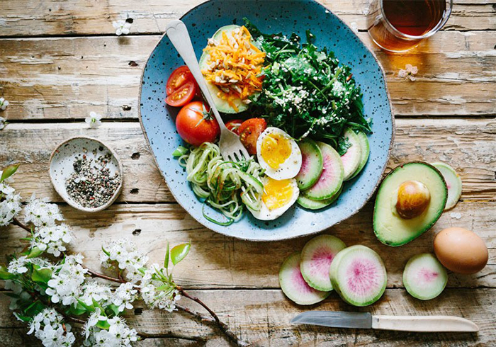

每月快訊

月號－健康大小事
扭轉「糖尿病前期」這樣吃！醫師授５大降血糖最佳飲食方式
|  |
|
糖尿病前期指的是血糖高於標準值，但還不足以成為第二型糖尿病患者。它是一個警訊，代表你可能在未來幾年，有高達50%的機率罹患糖尿病，但透過生活飲食的改變，還有機會扭轉，避免加入糖友一族。
三到六小時進食一次
大巴爾的摩醫學中心糖尿病和營養中心醫學博士Rebecca Denison說，起床一到兩小時內吃早餐，每三到六小時吃點心或正餐，維持血糖恆定。
注意餐盤食物分配
不含澱粉的蔬菜應該要占餐盤的一半，另一半則是蛋白質和全食物碳水化合物的組合，如糙米、藜麥、豆類、小米等穀物。這類複合碳水化合物比白米、麵包和義大利麵等加工碳水化合物含有更多纖維和營養素，纖維有助維持血糖穩定。
早餐吃得好，晚餐要吃少
西方俗諺說：「早餐吃得像國王，中午吃得像王子，晚餐吃得像乞丐。」雖然在睡前吃100-150大卡的小點心是允許的，但請確保晚餐要在睡前四小時吃完。
分散碳水化合物攝取時間
晚餐除了份量較少，最好也限制白飯、義大利麵等精緻碳水化合物的攝取量。建議吃「全食物」碳水化合物、並分配在三餐攝取，能減少胰島素持續分泌的負擔，減少血糖驟降。
降低血糖的最佳食物
| ❶非澱粉類蔬菜： |
份量至少要佔餐盤一半以上。 |
| ❷綠葉蔬菜： |
所有非澱粉類蔬菜都很好，其中綠葉蔬菜效果更強大。在針對六項研究的回顧中，研究 人員發現每天食用1.35份(約2/3杯煮熟蔬菜）綠葉蔬菜，與吃0.2份的人相比，患 第二型糖尿病的風險降低14%。 |
| ❸全穀類： |
吃全穀物已被證實可讓餐後血糖緩慢上升，降低第二型糖尿病風險。全穀物中的纖維會減緩碳水化合物的消化速度，從而減少對胰島素的需求。全穀物還含有抗氧化劑和多種營養素，可能有助於預防糖尿病。 |
| ❹瘦肉蛋白： |
蛋白質可以幫助長時間維持飽腹感，它還會減緩消化速度，讓餐後血糖緩升和緩降，不 會大起大落。可選擇魚或豆類等植物性蛋白質、家禽和瘦牛肉。 |
| ❺健康脂肪： |
脂肪的選擇與兩個問題有關：質量和數量。不飽和脂肪能改善胰島素阻抗，選擇堅果、 種子、橄欖油、酪梨等來源，但要注意份量，因為脂肪的熱量很高。膳食中適量的脂肪也有助於增加飽腹感。 |
| ❻豆類： |
發表在《臨床營養（Clinical Nutrition）》雜誌上的一項研究中，研究人員發現，豆類攝 取量最高的人罹患糖尿病的風險最低。每天用豆類代替半份雞蛋、麵包、米飯或馬鈴薯，也 與降低糖尿病發病率有關。包括扁豆在內的豆類，都富含纖維，也是良好的蛋白質來源。 |
| ❼全水果： |
適量吃包含纖維的完整水果，對糖尿病前期是有利的，但千萬不要喝沒有纖維的果汁。 |
|
|
| |
資料來源：
扭轉「糖尿病前期」這樣吃！醫師授5大降血糖最佳飲食方式 - 健康遠見
|